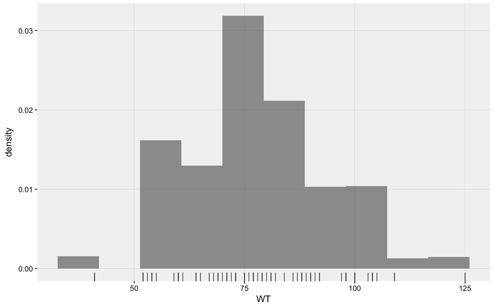
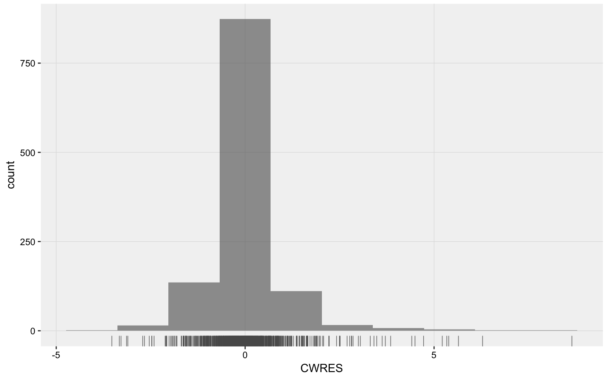

Manually generate distribution plots from an xpdb object.
xplot_distrib(xpdb, mapping = NULL, type = "hr", guide = FALSE, xscale = "continuous", yscale = "continuous", title = NULL, subtitle = NULL, caption = NULL, tag = NULL, plot_name = "density_plot", gg_theme, xp_theme, opt, quiet, ...)
| xpdb | An |
|---|---|
| mapping | List of aesthetics mappings to be used for the xpose plot
(e.g. |
| type | String setting the type of plot to be used. Can be histogram 'h', density 'd', rug 'r' or any combination of the three. |
| guide | Should the guide (e.g. reference distribution) be displayed. |
| xscale | Scale type for x axis (e.g. 'continuous', 'discrete', 'log10'). |
| yscale | Scale type for y axis (e.g. 'continuous', 'discrete', 'log10'). |
| title | Plot title. Use |
| subtitle | Plot subtitle. Use |
| caption | Page caption. Use |
| tag | Plot identification tag. Use |
| plot_name | Name to be used by |
| gg_theme | A ggplot2 theme object (e.g. |
| xp_theme | An xpose theme or vector of modifications to the xpose theme
(e.g. |
| opt | A list of options in order to create appropriate data input for
ggplot2. For more information see |
| quiet | Logical, if |
| ... | Any additional aesthetics. |
Plots can be customized by mapping arguments to specific layers. The naming convention is layer_option where layer is one of the names defined in the list below and option is any option supported by this layer e.g. histogram_fill = 'blue', rug_sides = 'b', etc.
histogram: options to geom_histogram
density: options to geom_density
rug: options to geom_rug
xscale: options to scale_x_continuous or scale_x_log10
yscale: options to scale_y_continuous or scale_y_log10
Every xpose plot function has built-in faceting functionalities. Faceting arguments
are passed to the functions facet_wrap_paginate when the facets
argument is a character string (e.g. facets = c('SEX', 'MED1')) or
facet_grid_paginate when facets is a formula (e.g. facets = SEX~MED1).
All xpose plot functions accept all the arguments for the facet_wrap_paginate
and facet_grid_paginate functions e.g. dv_vs_ipred(xpdb_ex_pk,
facets = SEX~MED1, ncol = 3, nrow = 3, page = 1, margins = TRUE, labeller = 'label_both').
Faceting options can either be defined in plot functions (e.g. dv_vs_ipred(xpdb_ex_pk,
facets = 'SEX')) or assigned globally to an xpdb object via the xp_theme (e.g. xpdb
<- update_themes(xpdb_ex_pk, xp_theme = list(facets = 'SEX'))). In the latter example all plots
generate from this xpdb will automatically be stratified by `SEX`.
By default, some plot functions use a custom stratifying variable named `variable`, e.g.
eta_distrib(). When using the facets argument, `variable` needs to be added manually
e.g. facets = c('SEX', 'variable') or facets = c('SEX', 'variable'), but is optional,
when using the facets argument in xp_theme variable is automatically added whenever needed.
Template titles can be used to create highly informative diagnostics plots.
They can be applied to any plot title, subtitle, caption and tag. Template titles
are defined via a single string containing key variables staring with a `@` (e.g. `@ofv`)
which will be replaced by their actual value when rendering the plot.
For example `'@run, @nobs observations in @nind subjects'` would become
`'run001, 1022 observations in 74 subjects'`. The available key variables
are listed under template_titles.
# A simple histogram xplot_distrib(xpdb_ex_pk, aes(x = WT), type = 'hr')#># A simple density plot xplot_distrib(xpdb_ex_pk, aes(x = CWRES), type = 'dr')#>